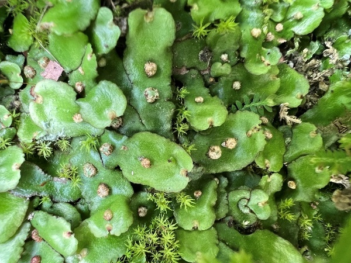

開啟你的科學放大鏡，標準化採集苔蘚特徵，為訓練 AI 做好準備！
在開始拍攝照片前，請先完成以下觀察步驟。精確的結構化特徵記錄，是 AI 能學得準的關鍵！
科學小原理：結構化的環境特徵是高品質的詮釋資料（Metadata）。在植物影像判釋的研究中，結合環境背景與作物特徵萃取分類演算法，能大幅協助卷積神經網路 (Convolutional Neural Network, CNN)進行更精準的歸類與判斷。
科學小原理：AI 無法直接理解抽象的植物外觀，必須透過明確的特徵標籤。將苔蘚的型態與顏色轉化為固定欄位，能讓影像資料在輸入電腦視覺模型時，特徵擷取的訓練流程更加高。
科學小原理：智慧影像識別研究證實，環境光源的穩定度與照明模式，是決定 AI 捕捉特徵輪廓成功率的絕對關鍵；而利用多角度與局部細節擷取，能有效修正目標物在野外因傾斜或旋轉造成的位置誤差，建立更精準的特徵矩陣。

[模擬上傳影像]